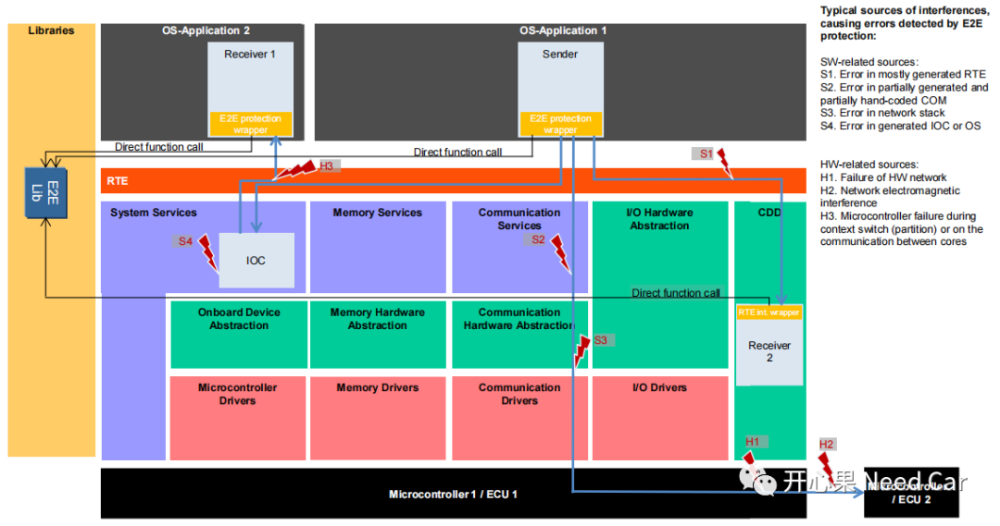
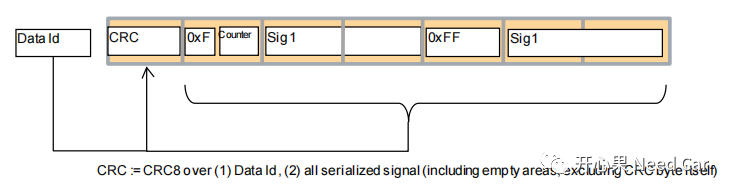
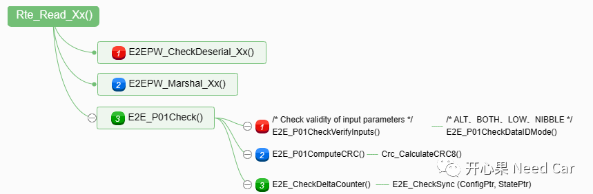
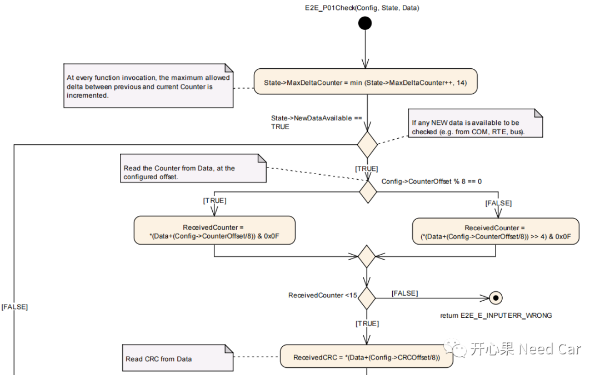
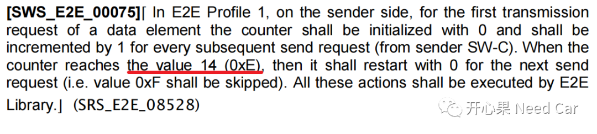
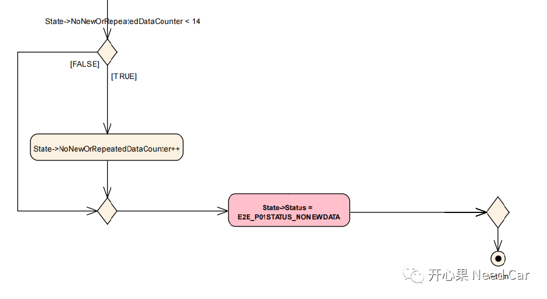
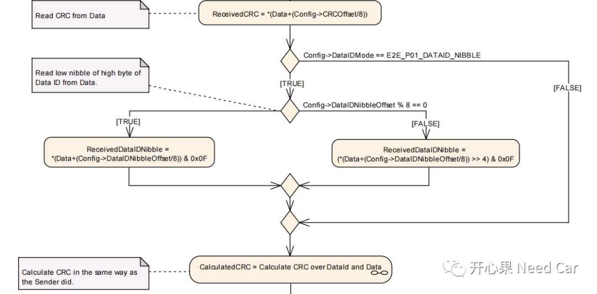
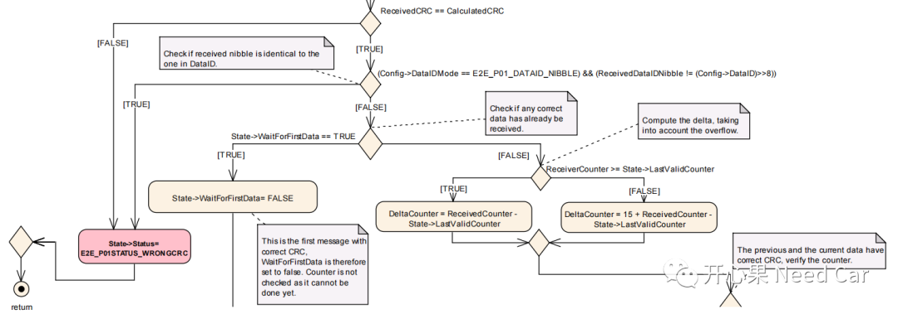
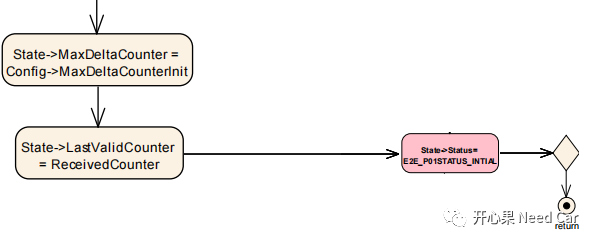
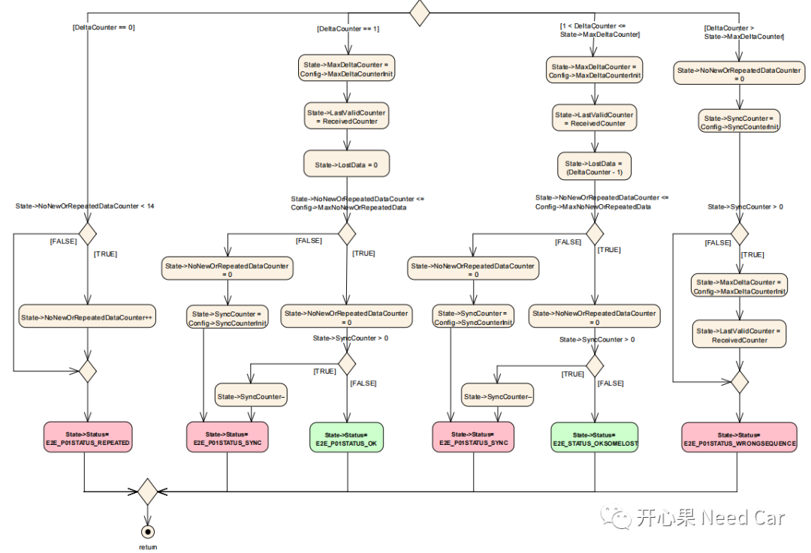

开心果 Need Car · 2022-12-29T08:15:00+08:00 · 微信原文
随着车辆智能化、网联化的发展，车辆已经变得越来越"智慧"。如今，人们已经不再满足于车辆代步的需求，而是越来越追求驾驶过程中的感官体验和娱乐功能。也正是这些功能的不断增加，使得车辆变得越来越复杂，当然，人们也意识到"安全"的重要性，在所有安全的概念中，"功能安全"无疑是最有分量的一个。任何可能对驾乘人员造成人身安全的问题，均是零容忍的。为了确保车辆功能安全，在车辆软件开发中，"E2E（End to End）"占据着一席之地。本文。着重聊一聊E2E的Profile01。
E2E主要用于保护通信数据，确保数据在传输过程中不被破坏。注意，E2E属于功能安全的范畴，它不同于信息安全，可以不用压缩或者加密，明文传输即可。只要传输的数据不被破坏，即使被第三方截获也没关系，因为数据没有被破坏，所以，功能仍可以被正常执行。
1、E2E保护范畴
按照Autosar的解释，E2E主要从三个方面保护通信：1、软件故障保护 2、随机硬件故障保护 3、外部环境引发的故障保护。结合下图，分析以下这三种故障：

（一）软件故障保护
这个其实很好理解，只要是人设计、编程的代码，就可能存在"漏洞"。不是说，有"漏洞"的代码或者框架就是不好的，因为，车辆是一个复杂的系统性工程，一个车辆，ECU少则几十个，多则上百个，让这些ECU在其整个生命周期都有效地配合，不出丝毫差错，是很难做到的。Autosar规范中，认为软件故障主要集中在RTE、COM层的部分手动代码、通信栈、核间通信及OS交互之间。这里，个人觉得还有一种情况：重攻击。虽然，这种情况在互联网中常见，但是，车辆通信过程中，如果报文被第三方恶意篡改、模拟攻击，E2E也可很快识别出来，进而进行功能降级处理，确保驾乘人员的安全。
（二）随机硬件故障保护
随机硬件故障主要是指通信相关器件的故障。比如：CAN对应的Transceiver损坏、LIN外设模块的寄存器损坏等。这些通信硬件的损坏势必影响车辆通信，进而影响车辆功能。硬件随机故障不可避免，所以，在开发中，会设计硬线模块进行故障诊断。
（三）外部环境引发的故障
我们知道，一款车在销售给用户之前会做大量的试验和测试认证。这里的试验就包括"三高"试验（高原、高寒、高温），以此确保车辆在极端环境下的可靠性。但是，即使这样，依然不可避免车辆的概率性失效。比如：极端雷雨天的电磁干扰，EMI（Electro-Magnetic Interference）可能使得通信稳定性变差，信号失效。还有，空气湿度、温度、一些腐蚀性气/液体、车辆器件的机械强度（eg：震动）等都可能引发车辆通信器件故障，使得通信失效。一旦通信出现非预期的通信行为，E2E模块即可捕获对应的故障信息，并反馈给使用者。
2、E2E Profile01
E2E Profile01 Variant 1A对应的格式如下所示：

提示：
E2E_P01 DataID Mode必须选择E2E_P01_DATAID_BOTH；
未使用部分，填充0xFF。
（二）E2E_P01Check
对于E2E的接收检查，主要接口层级关系如下所示：


（1）用户通过Rte获取信息时，会调用E2E库函数E2E_P01Check()接口进行信息检查。开始的第一步是获取MaxDeltaCounter，MaxDeltaCounter的最大值为14，因为Counter的最大值为14，所以，两次接收到的Counter差值最大不会超过14。Autosar中，对Counter值的变化约束如下所示：


（3）获取ReceivedCRC以后，进一步获取DataIDMode，DataIDMode的判断流程如下所示：




这里主要提示两个参数配置：
SyncCounterInit：推荐值为1；
maxNoNewOrRepeatedData：推荐值14，表示正常的通信条件下，接收端预期不会超过的最大丢失或重复数据量。
工程配置时，不要忽视这两个参数。对于如何使用Capl写E2E的测试脚本，可以参考前文：Autosar功能安全之E2E：别再发愁E2E了，我侃侃。
往期精彩回顾